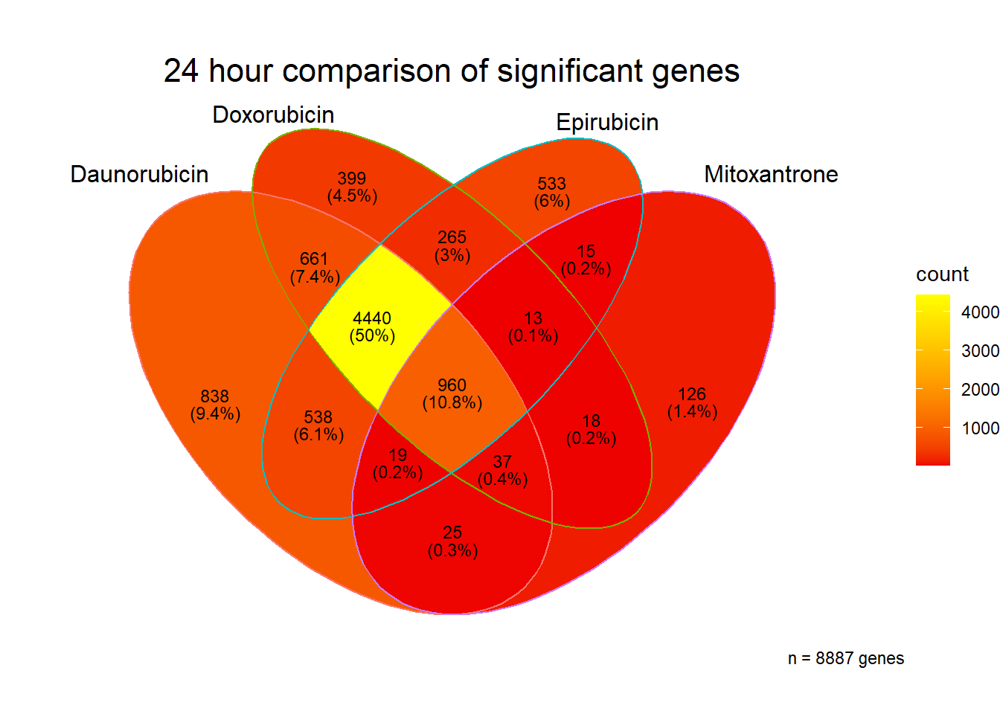
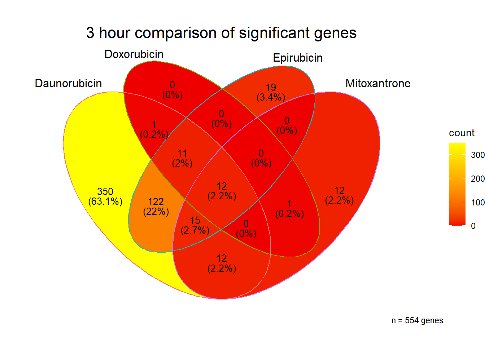
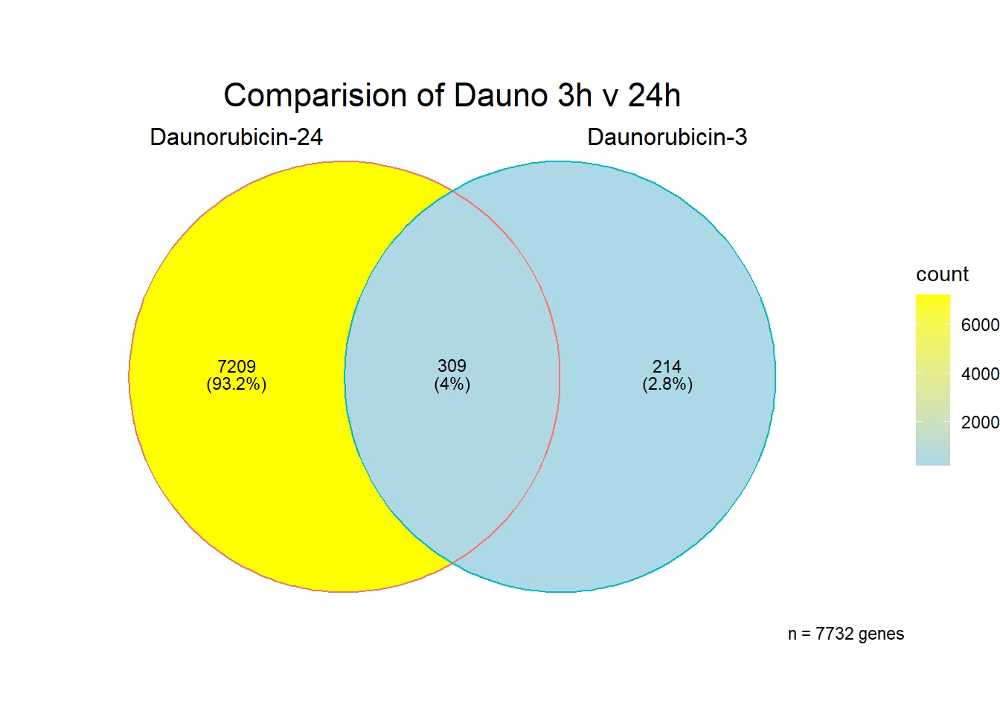
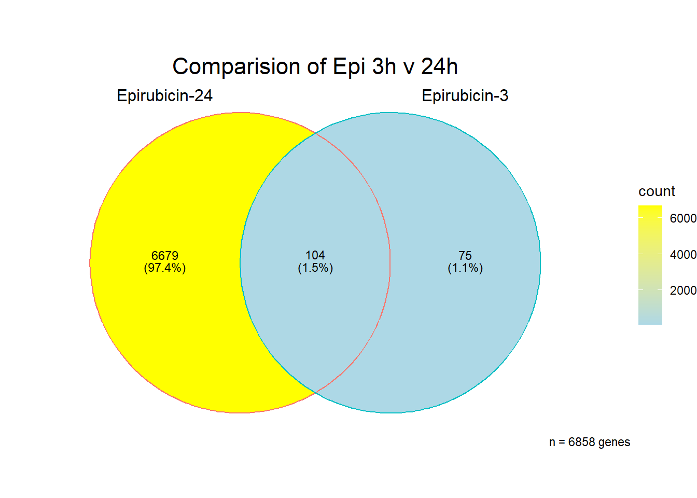
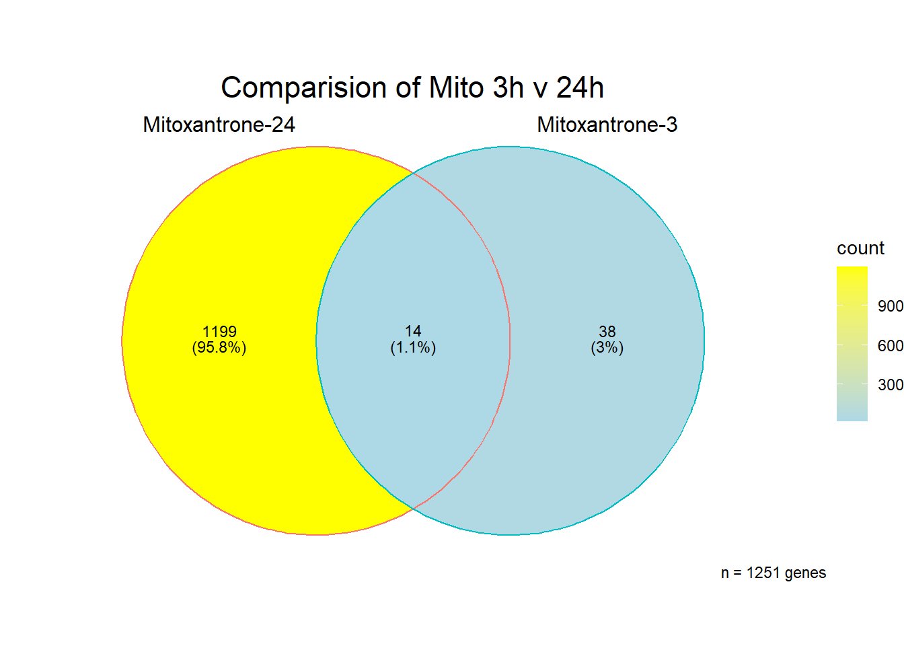
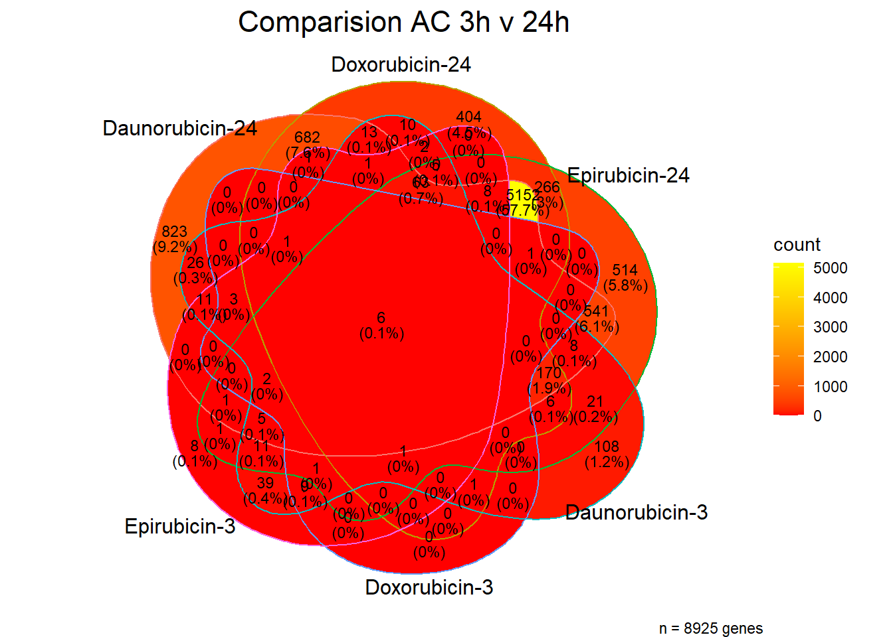

Last updated: 2023-02-10
Checks: 7 0
Knit directory: Cardiotoxicity/
This reproducible R Markdown analysis was created with workflowr (version 1.7.0). The Checks tab describes the reproducibility checks that were applied when the results were created. The Past versions tab lists the development history.
Great! Since the R Markdown file has been committed to the Git repository, you know the exact version of the code that produced these results.
Great job! The global environment was empty. Objects defined in the global environment can affect the analysis in your R Markdown file in unknown ways. For reproduciblity it’s best to always run the code in an empty environment.
The command set.seed(20230109) was run prior to running
the code in the R Markdown file. Setting a seed ensures that any results
that rely on randomness, e.g. subsampling or permutations, are
reproducible.
Great job! Recording the operating system, R version, and package versions is critical for reproducibility.
Nice! There were no cached chunks for this analysis, so you can be confident that you successfully produced the results during this run.
Great job! Using relative paths to the files within your workflowr project makes it easier to run your code on other machines.
Great! You are using Git for version control. Tracking code development and connecting the code version to the results is critical for reproducibility.
The results in this page were generated with repository version ea3f948. See the Past versions tab to see a history of the changes made to the R Markdown and HTML files.
Note that you need to be careful to ensure that all relevant files for
the analysis have been committed to Git prior to generating the results
(you can use wflow_publish or
wflow_git_commit). workflowr only checks the R Markdown
file, but you know if there are other scripts or data files that it
depends on. Below is the status of the Git repository when the results
were generated:
Ignored files:
Ignored: .RData
Ignored: .Rhistory
Ignored: .Rproj.user/
Ignored: data/.txt
Ignored: data/allgenes.txt
Ignored: data/backGL.txt
Ignored: data/data_outline.txt
Ignored: data/filenameonly.txt
Ignored: data/individualDRCfile.RDS
Ignored: data/mymatrix.RDS
Ignored: data/norm_LDH.csv
Ignored: data/norm_counts.csv
Ignored: data/response_cluster24h.csv
Ignored: data/sigVDA24.txt
Ignored: data/sigVDA3.txt
Ignored: data/sigVDX24.txt
Ignored: data/sigVDX3.txt
Ignored: data/sigVEP24.txt
Ignored: data/sigVEP3.txt
Ignored: data/sigVMT24.txt
Ignored: data/sigVMT3.txt
Ignored: data/sigVTR24.txt
Ignored: data/sigVTR3.txt
Untracked files:
Untracked: .RDataTmp
Untracked: firstvenn24h.png
Untracked: mcor.csv
Untracked: reneebasecode.R
Unstaged changes:
Modified: Cardiotoxicity.Rproj
Modified: code/Corrscripts.R
Modified: venn_code.R
Note that any generated files, e.g. HTML, png, CSS, etc., are not included in this status report because it is ok for generated content to have uncommitted changes.
These are the previous versions of the repository in which changes were
made to the R Markdown (analysis/GO_analysis.Rmd) and HTML
(docs/GO_analysis.html) files. If you’ve configured a
remote Git repository (see ?wflow_git_remote), click on the
hyperlinks in the table below to view the files as they were in that
past version.
| File | Version | Author | Date | Message |
|---|---|---|---|---|
| Rmd | ea3f948 | reneeisnowhere | 2023-02-10 | updates for the week |
| Rmd | accc241 | reneeisnowhere | 2023-02-10 | updates for the week |
| Rmd | 8c41736 | reneeisnowhere | 2023-02-07 | update with corrMotif |
| html | f147cf9 | reneeisnowhere | 2023-02-01 | Build site. |
| Rmd | 1657edd | reneeisnowhere | 2023-02-01 | updating Go tables |
| html | eed4dc5 | reneeisnowhere | 2023-01-31 | Build site. |
| Rmd | 848eb1a | reneeisnowhere | 2023-01-31 | updating GO plots |
| Rmd | 82b31a0 | reneeisnowhere | 2023-01-31 | updating GEA |
| Rmd | 34a525c | reneeisnowhere | 2023-01-26 | link update |
| html | 41b5f9c | reneeisnowhere | 2023-01-23 | Build site. |
| Rmd | dc890ec | reneeisnowhere | 2023-01-23 | Updating the source dir |
| Rmd | a78eab0 | reneeisnowhere | 2023-01-23 | updated Go analysis |
| Rmd | d9edc06 | reneeisnowhere | 2023-01-20 | try a little update later |
| Rmd | b7eac76 | reneeisnowhere | 2023-01-20 | updating GO |
| html | 6c21cf8 | reneeisnowhere | 2023-01-20 | Build site. |
| Rmd | 443a9f3 | reneeisnowhere | 2023-01-20 | adding in GO analysis |
I have created several files from the RNA analysis that contain the significant genes(determined by adj.P.val < 0.1) from each Time and Condition. The names of the files are in the following format: ‘sigV’+Drug(2 letters)+time.
example: ‘sigVDA3.txt’ means this file contains the significant DE genes from the Daunorubicin 3 hour compared to Vehicle Control 3 hour analysis
library(gprofiler2)
library(tidyverse)
library(ggplot2)
library(readr)
library(BiocGenerics)
library(gridExtra)
library(VennDiagram)
library(kableExtra)
library(scales)
library(ggVennDiagram)The analysis is based on all genes that passed the rowMeans>0 from the previous page link
Below is the analysis of differentially expressed genes for each treatment at 3 hours and 24 hours.
| source | term_id | term_name | intersection_size | term_size | p_value |
|---|---|---|---|---|---|
| GO:BP | GO:0006366 | transcription by RNA polymerase II | 212 | 2055 | 1.51e-31 |
| GO:BP | GO:0006357 | regulation of transcription by RNA polymerase II | 206 | 1978 | 3.06e-31 |
| GO:BP | GO:0097659 | nucleic acid-templated transcription | 243 | 2767 | 3.81e-27 |
| GO:BP | GO:0006351 | DNA-templated transcription | 243 | 2766 | 3.81e-27 |
| GO:BP | GO:0032774 | RNA biosynthetic process | 243 | 2782 | 7.23e-27 |
| GO:BP | GO:0051252 | regulation of RNA metabolic process | 247 | 2921 | 1.06e-25 |
| GO:BP | GO:1903506 | regulation of nucleic acid-templated transcription | 234 | 2663 | 1.13e-25 |
| GO:BP | GO:0006355 | regulation of DNA-templated transcription | 234 | 2662 | 1.13e-25 |
| GO:BP | GO:2001141 | regulation of RNA biosynthetic process | 234 | 2670 | 1.50e-25 |
| GO:BP | GO:0010556 | regulation of macromolecule biosynthetic process | 248 | 3088 | 3.55e-23 |
| GO:BP | GO:0019219 | regulation of nucleobase-containing compound metabolic process | 214 | 3181 | 7.80e-23 |
| GO:BP | GO:0034654 | nucleobase-containing compound biosynthetic process | 202 | 3149 | 3.21e-21 |
| GO:BP | GO:0031326 | regulation of cellular biosynthetic process | 211 | 3204 | 3.83e-21 |
| GO:BP | GO:0018130 | heterocycle biosynthetic process | 249 | 3210 | 7.32e-21 |
| GO:BP | GO:0019438 | aromatic compound biosynthetic process | 186 | 3212 | 1.37e-20 |
| GO:BP | GO:0009889 | regulation of biosynthetic process | 211 | 3255 | 2.37e-20 |
| GO:BP | GO:1901362 | organic cyclic compound biosynthetic process | 188 | 3319 | 1.13e-19 |
| GO:BP | GO:0009059 | macromolecule biosynthetic process | 220 | 3801 | 3.12e-19 |
| GO:BP | GO:0044271 | cellular nitrogen compound biosynthetic process | 222 | 3820 | 3.95e-16 |
| GO:BP | GO:0031323 | regulation of cellular metabolic process | 234 | 4432 | 1.89e-15 |
| GO:BP | GO:0080090 | regulation of primary metabolic process | 234 | 4567 | 3.53e-13 |
| GO:BP | GO:0051171 | regulation of nitrogen compound metabolic process | 239 | 4443 | 4.83e-13 |
| GO:BP | GO:0044249 | cellular biosynthetic process | 208 | 4569 | 2.48e-12 |
| GO:BP | GO:0000122 | negative regulation of transcription by RNA polymerase II | 83 | 761 | 2.91e-12 |
| GO:BP | GO:1901576 | organic substance biosynthetic process | 208 | 4628 | 1.02e-11 |
| GO:BP | GO:0045892 | negative regulation of DNA-templated transcription | 100 | 1041 | 1.05e-11 |
| GO:BP | GO:1903507 | negative regulation of nucleic acid-templated transcription | 100 | 1043 | 1.12e-11 |
| GO:BP | GO:1902679 | negative regulation of RNA biosynthetic process | 100 | 1044 | 1.19e-11 |
| GO:BP | GO:0051253 | negative regulation of RNA metabolic process | 105 | 1137 | 1.71e-11 |
| GO:BP | GO:0009058 | biosynthetic process | 209 | 4691 | 2.15e-11 |
| GO:BP | GO:0010558 | negative regulation of macromolecule biosynthetic process | 106 | 1237 | 1.20e-09 |
| GO:BP | GO:0045934 | negative regulation of nucleobase-containing compound metabolic process | 106 | 1239 | 1.41e-09 |
| GO:BP | GO:0045893 | positive regulation of DNA-templated transcription | 108 | 1342 | 3.35e-09 |
| GO:BP | GO:1903508 | positive regulation of nucleic acid-templated transcription | 108 | 1342 | 3.35e-09 |
| GO:BP | GO:0010468 | regulation of gene expression | 212 | 3687 | 3.35e-09 |
| GO:BP | GO:0051254 | positive regulation of RNA metabolic process | 114 | 1469 | 3.59e-09 |
| GO:BP | GO:1902680 | positive regulation of RNA biosynthetic process | 108 | 1348 | 3.93e-09 |
| GO:BP | GO:0031327 | negative regulation of cellular biosynthetic process | 106 | 1279 | 9.70e-09 |
| GO:BP | GO:0010557 | positive regulation of macromolecule biosynthetic process | 116 | 1537 | 1.15e-08 |
| GO:BP | GO:0009890 | negative regulation of biosynthetic process | 106 | 1304 | 2.77e-08 |
| GO:BP | GO:0031328 | positive regulation of cellular biosynthetic process | 119 | 1614 | 3.64e-08 |
| GO:BP | GO:0045944 | positive regulation of transcription by RNA polymerase II | 83 | 952 | 8.69e-08 |
| GO:BP | GO:0009891 | positive regulation of biosynthetic process | 119 | 1640 | 1.04e-07 |
| GO:BP | GO:0045935 | positive regulation of nucleobase-containing compound metabolic process | 117 | 1641 | 2.23e-07 |
| GO:BP | GO:0031324 | negative regulation of cellular metabolic process | 127 | 1830 | 8.08e-07 |
| GO:BP | GO:0060255 | regulation of macromolecule metabolic process | 111 | 4772 | 2.49e-06 |
| GO:BP | GO:0019222 | regulation of metabolic process | 115 | 5189 | 1.10e-05 |
| GO:BP | GO:0031325 | positive regulation of cellular metabolic process | 123 | 2446 | 1.78e-05 |
| GO:BP | GO:0051173 | positive regulation of nitrogen compound metabolic process | 123 | 2497 | 5.00e-05 |
| GO:BP | GO:0051172 | negative regulation of nitrogen compound metabolic process | 126 | 1905 | 5.02e-05 |
| GO:CC | GO:0090575 | RNA polymerase II transcription regulator complex | 14 | 219 | 3.93e-05 |
| GO:CC | GO:0005667 | transcription regulator complex | 42 | 413 | 3.93e-05 |
| GO:MF | GO:0003677 | DNA binding | 197 | 1908 | 9.77e-29 |
| GO:MF | GO:0140110 | transcription regulator activity | 168 | 1431 | 1.30e-28 |
| GO:MF | GO:0000976 | transcription cis-regulatory region binding | 143 | 1082 | 4.97e-28 |
| GO:MF | GO:0001067 | transcription regulatory region nucleic acid binding | 143 | 1084 | 4.97e-28 |
| GO:MF | GO:0003700 | DNA-binding transcription factor activity | 138 | 975 | 4.97e-28 |
| GO:MF | GO:0000977 | RNA polymerase II transcription regulatory region sequence-specific DNA binding | 136 | 998 | 3.16e-27 |
| GO:MF | GO:1990837 | sequence-specific double-stranded DNA binding | 144 | 1128 | 4.86e-27 |
| GO:MF | GO:0043565 | sequence-specific DNA binding | 148 | 1220 | 3.07e-26 |
| GO:MF | GO:0000981 | DNA-binding transcription factor activity, RNA polymerase II-specific | 130 | 935 | 1.74e-25 |
| GO:MF | GO:0003690 | double-stranded DNA binding | 145 | 1209 | 7.19e-25 |
| GO:MF | GO:0000987 | cis-regulatory region sequence-specific DNA binding | 92 | 860 | 1.13e-22 |
| GO:MF | GO:0000978 | RNA polymerase II cis-regulatory region sequence-specific DNA binding | 91 | 843 | 1.33e-22 |
| GO:MF | GO:0001217 | DNA-binding transcription repressor activity | 35 | 246 | 2.35e-07 |
| GO:MF | GO:0001228 | DNA-binding transcription activator activity, RNA polymerase II-specific | 39 | 304 | 3.92e-07 |
| GO:MF | GO:0001216 | DNA-binding transcription activator activity | 39 | 308 | 4.64e-07 |
| GO:MF | GO:0001227 | DNA-binding transcription repressor activity, RNA polymerase II-specific | 33 | 242 | 1.69e-06 |
| GO:MF | GO:0046872 | metal ion binding | 204 | 3328 | 4.40e-06 |
| GO:MF | GO:0043169 | cation binding | 204 | 3392 | 2.37e-05 |
I first looked at the data with all genes from the sigDA3 dataset. I used the list of all genes based on my rowMeans>0 filtering as background.
I then separated the VDA3 file by log2 Fold Change to see how the gene sets are enriched. Nothing showed up in the GO-BP/CC/MG-down regulated gene-set at a significant level, p<0.05.
Note this is at three hour for Daunorubicin
| source | term_id | term_name | intersection_size | term_size | p_value |
|---|---|---|---|---|---|
| GO:BP | GO:0000070 | mitotic sister chromatid segregation | 74 | 192 | 8.62e-05 |
| GO:BP | GO:0000819 | sister chromatid segregation | 81 | 215 | 8.62e-05 |
| GO:BP | GO:0045930 | negative regulation of mitotic cell cycle | 83 | 212 | 8.62e-05 |
| GO:CC | GO:0098687 | chromosomal region | 126 | 353 | 2.75e-08 |
| GO:CC | GO:0000775 | chromosome, centromeric region | 89 | 229 | 2.23e-06 |
| GO:CC | GO:0000940 | outer kinetochore | 11 | 12 | 2.39e-05 |
| GO:CC | GO:0000779 | condensed chromosome, centromeric region | 64 | 167 | 4.66e-05 |
Here I was able to visualize the 24 hour GO analysis of daunorubicin.
##Venn Diagrams
[1] 8887
[1] 554
[1] 7732
[1] 6808[1] 6858
[1] 1251
[1] 8925 Tell me more! what are those genes at 24 hours?? give me some GO! # Graphing GO
# list24totvenn <- get.venn.partitions(total24)
# all24hour <- listvenn$values[1]
##From Cormotif
response_cluster24h <- read_csv("data/response_cluster24h.csv",
col_types = cols(...1 = col_skip()))
length(response_cluster24h$x)[1] 1489gostrescorm24 <- gost(query = response_cluster24h$x, organism = "hsapiens",
ordered_query = FALSE,
domain_scope = "custom",
measure_underrepresentation = FALSE,
evcodes = FALSE,
user_threshold = 0.0001,
correction_method = c("fdr"),
custom_bg = backGL$ENTREZID,
sources=c("GO:BP","GO:MF", "GO:CC"))
pDA24 <- gostplot(gostrescorm24, capped = FALSE, interactive = TRUE)
pDA24# (gostres$result$p_value)
table3 <- gostrescorm24$result %>%
dplyr::select(c(source, term_id, term_name,intersection_size, term_size, p_value)) %>%
mutate_at(.cols = 6, .funs= scientific_format()) %>%
kable(.,) %>%
kable_paper("striped", full_width = FALSE) %>%
kable_styling(full_width = FALSE, position = "left",bootstrap_options = c("striped","hover"))
table3| source | term_id | term_name | intersection_size | term_size | p_value |
|---|---|---|---|---|---|
| GO:BP | GO:0007049 | cell cycle | 308 | 1529 | 5.34e-32 |
| GO:BP | GO:0000278 | mitotic cell cycle | 200 | 841 | 4.69e-29 |
| GO:BP | GO:1903047 | mitotic cell cycle process | 177 | 704 | 1.30e-28 |
| GO:BP | GO:0022402 | cell cycle process | 227 | 1051 | 3.54e-27 |
| GO:BP | GO:0051726 | regulation of cell cycle | 205 | 959 | 1.30e-23 |
| GO:BP | GO:0051301 | cell division | 145 | 577 | 3.65e-23 |
| GO:BP | GO:0000280 | nuclear division | 113 | 389 | 3.65e-23 |
| GO:BP | GO:0010564 | regulation of cell cycle process | 152 | 622 | 4.32e-23 |
| GO:BP | GO:0007059 | chromosome segregation | 100 | 327 | 3.02e-22 |
| GO:BP | GO:0051276 | chromosome organization | 133 | 523 | 1.05e-21 |
| GO:BP | GO:0140014 | mitotic nuclear division | 92 | 297 | 7.73e-21 |
| GO:BP | GO:0048285 | organelle fission | 114 | 432 | 8.20e-20 |
| GO:BP | GO:0098813 | nuclear chromosome segregation | 85 | 269 | 8.20e-20 |
| GO:BP | GO:0000819 | sister chromatid segregation | 73 | 215 | 7.06e-19 |
| GO:BP | GO:0000070 | mitotic sister chromatid segregation | 68 | 192 | 1.14e-18 |
| GO:BP | GO:0000075 | cell cycle checkpoint signaling | 65 | 182 | 4.96e-18 |
| GO:BP | GO:0007093 | mitotic cell cycle checkpoint signaling | 55 | 139 | 1.84e-17 |
| GO:BP | GO:0007346 | regulation of mitotic cell cycle | 108 | 447 | 1.09e-15 |
| GO:BP | GO:0045786 | negative regulation of cell cycle | 91 | 344 | 1.10e-15 |
| GO:BP | GO:0044770 | cell cycle phase transition | 115 | 504 | 7.51e-15 |
| GO:BP | GO:0045930 | negative regulation of mitotic cell cycle | 66 | 212 | 7.51e-15 |
| GO:BP | GO:0006260 | DNA replication | 75 | 262 | 8.66e-15 |
| GO:BP | GO:1901988 | negative regulation of cell cycle phase transition | 70 | 235 | 9.68e-15 |
| GO:BP | GO:1901987 | regulation of cell cycle phase transition | 96 | 392 | 2.61e-14 |
| GO:BP | GO:0010948 | negative regulation of cell cycle process | 76 | 273 | 2.61e-14 |
| GO:BP | GO:0051783 | regulation of nuclear division | 46 | 118 | 2.89e-14 |
| GO:BP | GO:0044772 | mitotic cell cycle phase transition | 100 | 419 | 3.41e-14 |
| GO:BP | GO:0007088 | regulation of mitotic nuclear division | 42 | 103 | 8.64e-14 |
| GO:BP | GO:0090068 | positive regulation of cell cycle process | 63 | 207 | 9.72e-14 |
| GO:BP | GO:0006261 | DNA-templated DNA replication | 52 | 152 | 1.66e-13 |
| GO:BP | GO:0051983 | regulation of chromosome segregation | 45 | 119 | 2.03e-13 |
| GO:BP | GO:1901990 | regulation of mitotic cell cycle phase transition | 80 | 310 | 3.58e-13 |
| GO:BP | GO:1901991 | negative regulation of mitotic cell cycle phase transition | 54 | 167 | 6.55e-13 |
| GO:BP | GO:0033048 | negative regulation of mitotic sister chromatid segregation | 27 | 48 | 7.12e-13 |
| GO:BP | GO:0033046 | negative regulation of sister chromatid segregation | 27 | 48 | 7.12e-13 |
| GO:BP | GO:2000816 | negative regulation of mitotic sister chromatid separation | 27 | 48 | 7.12e-13 |
| GO:BP | GO:1905819 | negative regulation of chromosome separation | 27 | 49 | 1.36e-12 |
| GO:BP | GO:0051985 | negative regulation of chromosome segregation | 27 | 49 | 1.36e-12 |
| GO:BP | GO:0033047 | regulation of mitotic sister chromatid segregation | 28 | 53 | 1.72e-12 |
| GO:BP | GO:0007051 | spindle organization | 57 | 187 | 1.72e-12 |
| GO:BP | GO:1903046 | meiotic cell cycle process | 48 | 141 | 2.01e-12 |
| GO:BP | GO:0000226 | microtubule cytoskeleton organization | 116 | 554 | 2.08e-12 |
| GO:BP | GO:1905818 | regulation of chromosome separation | 40 | 103 | 2.08e-12 |
| GO:BP | GO:0045841 | negative regulation of mitotic metaphase/anaphase transition | 26 | 47 | 3.29e-12 |
| GO:BP | GO:1902100 | negative regulation of metaphase/anaphase transition of cell cycle | 26 | 48 | 6.35e-12 |
| GO:BP | GO:0051304 | chromosome separation | 43 | 121 | 7.89e-12 |
| GO:BP | GO:0071173 | spindle assembly checkpoint signaling | 25 | 45 | 8.30e-12 |
| GO:BP | GO:0007094 | mitotic spindle assembly checkpoint signaling | 25 | 45 | 8.30e-12 |
| GO:BP | GO:0071174 | mitotic spindle checkpoint signaling | 25 | 45 | 8.30e-12 |
| GO:BP | GO:0045787 | positive regulation of cell cycle | 72 | 282 | 1.12e-11 |
| GO:BP | GO:0031577 | spindle checkpoint signaling | 25 | 46 | 1.58e-11 |
| GO:BP | GO:1902850 | microtubule cytoskeleton organization involved in mitosis | 49 | 154 | 1.64e-11 |
| GO:BP | GO:0051321 | meiotic cell cycle | 56 | 193 | 2.27e-11 |
| GO:BP | GO:0006259 | DNA metabolic process | 162 | 908 | 2.45e-11 |
| GO:BP | GO:0051784 | negative regulation of nuclear division | 28 | 58 | 2.45e-11 |
| GO:BP | GO:0045839 | negative regulation of mitotic nuclear division | 27 | 55 | 3.87e-11 |
| GO:BP | GO:0033045 | regulation of sister chromatid segregation | 37 | 99 | 6.33e-11 |
| GO:BP | GO:0010965 | regulation of mitotic sister chromatid separation | 35 | 92 | 1.45e-10 |
| GO:BP | GO:0140013 | meiotic nuclear division | 42 | 126 | 1.46e-10 |
| GO:BP | GO:0006974 | cellular response to DNA damage stimulus | 145 | 801 | 1.54e-10 |
| GO:BP | GO:0031570 | DNA integrity checkpoint signaling | 42 | 127 | 1.91e-10 |
| GO:BP | GO:0007052 | mitotic spindle organization | 42 | 129 | 3.39e-10 |
| GO:BP | GO:0051306 | mitotic sister chromatid separation | 35 | 95 | 3.99e-10 |
| GO:BP | GO:0007091 | metaphase/anaphase transition of mitotic cell cycle | 34 | 91 | 5.06e-10 |
| GO:BP | GO:0044784 | metaphase/anaphase transition of cell cycle | 34 | 92 | 7.14e-10 |
| GO:BP | GO:0007017 | microtubule-based process | 138 | 769 | 1.00e-09 |
| GO:BP | GO:0065004 | protein-DNA complex assembly | 50 | 177 | 1.10e-09 |
| GO:BP | GO:0030071 | regulation of mitotic metaphase/anaphase transition | 33 | 89 | 1.26e-09 |
| GO:BP | GO:1902099 | regulation of metaphase/anaphase transition of cell cycle | 33 | 90 | 1.77e-09 |
| GO:BP | GO:2001251 | negative regulation of chromosome organization | 33 | 93 | 4.89e-09 |
| GO:BP | GO:0016043 | cellular component organization | 634 | 5135 | 5.47e-09 |
| GO:BP | GO:0006996 | organelle organization | 403 | 3007 | 5.93e-09 |
| GO:BP | GO:0051225 | spindle assembly | 38 | 119 | 6.09e-09 |
| GO:BP | GO:0008608 | attachment of spindle microtubules to kinetochore | 21 | 42 | 8.57e-09 |
| GO:BP | GO:0033554 | cellular response to stress | 250 | 1699 | 1.48e-08 |
| GO:BP | GO:0044839 | cell cycle G2/M phase transition | 43 | 150 | 1.65e-08 |
| GO:BP | GO:0051716 | cellular response to stimulus | 631 | 5146 | 2.34e-08 |
| GO:BP | GO:0000086 | G2/M transition of mitotic cell cycle | 40 | 135 | 2.34e-08 |
| GO:BP | GO:0044774 | mitotic DNA integrity checkpoint signaling | 30 | 84 | 2.76e-08 |
| GO:BP | GO:0051310 | metaphase plate congression | 27 | 70 | 2.85e-08 |
| GO:BP | GO:0032465 | regulation of cytokinesis | 29 | 80 | 3.52e-08 |
| GO:BP | GO:0050896 | response to stimulus | 716 | 5975 | 3.52e-08 |
| GO:BP | GO:0000910 | cytokinesis | 44 | 164 | 9.35e-08 |
| GO:BP | GO:0050000 | chromosome localization | 29 | 83 | 9.35e-08 |
| GO:BP | GO:0006270 | DNA replication initiation | 18 | 35 | 9.35e-08 |
| GO:BP | GO:0071459 | protein localization to chromosome, centromeric region | 18 | 35 | 9.35e-08 |
| GO:BP | GO:0006281 | DNA repair | 100 | 539 | 1.10e-07 |
| GO:BP | GO:0051302 | regulation of cell division | 41 | 148 | 1.18e-07 |
| GO:BP | GO:0071840 | cellular component organization or biogenesis | 644 | 5328 | 1.72e-07 |
| GO:BP | GO:0035556 | intracellular signal transduction | 293 | 2117 | 2.09e-07 |
| GO:BP | GO:0051303 | establishment of chromosome localization | 27 | 76 | 2.14e-07 |
| GO:BP | GO:0090329 | regulation of DNA-templated DNA replication | 22 | 53 | 2.17e-07 |
| GO:BP | GO:0033044 | regulation of chromosome organization | 55 | 238 | 2.99e-07 |
| GO:BP | GO:0000077 | DNA damage checkpoint signaling | 35 | 119 | 3.21e-07 |
| GO:BP | GO:0051383 | kinetochore organization | 14 | 23 | 3.37e-07 |
| GO:BP | GO:0061982 | meiosis I cell cycle process | 28 | 83 | 3.95e-07 |
| GO:BP | GO:0071824 | protein-DNA complex subunit organization | 50 | 209 | 4.35e-07 |
| GO:BP | GO:0034508 | centromere complex assembly | 16 | 31 | 6.65e-07 |
| GO:BP | GO:0042770 | signal transduction in response to DNA damage | 44 | 175 | 7.05e-07 |
| GO:BP | GO:0044773 | mitotic DNA damage checkpoint signaling | 27 | 80 | 7.05e-07 |
| GO:BP | GO:0034502 | protein localization to chromosome | 31 | 103 | 1.27e-06 |
| GO:BP | GO:0010389 | regulation of G2/M transition of mitotic cell cycle | 29 | 93 | 1.50e-06 |
| GO:BP | GO:0006275 | regulation of DNA replication | 34 | 122 | 2.19e-06 |
| GO:BP | GO:0000076 | DNA replication checkpoint signaling | 11 | 16 | 2.42e-06 |
| GO:BP | GO:0006950 | response to stress | 367 | 2838 | 3.55e-06 |
| GO:BP | GO:0007080 | mitotic metaphase plate congression | 21 | 56 | 3.70e-06 |
| GO:BP | GO:0001932 | regulation of protein phosphorylation | 134 | 842 | 3.90e-06 |
| GO:BP | GO:0009314 | response to radiation | 70 | 359 | 3.92e-06 |
| GO:BP | GO:0000281 | mitotic cytokinesis | 26 | 81 | 3.93e-06 |
| GO:BP | GO:0007098 | centrosome cycle | 34 | 125 | 3.97e-06 |
| GO:BP | GO:1902749 | regulation of cell cycle G2/M phase transition | 30 | 104 | 5.70e-06 |
| GO:BP | GO:0051256 | mitotic spindle midzone assembly | 8 | 9 | 6.67e-06 |
| GO:BP | GO:0010212 | response to ionizing radiation | 35 | 134 | 7.46e-06 |
| GO:BP | GO:0044786 | cell cycle DNA replication | 17 | 40 | 7.64e-06 |
| GO:BP | GO:0007127 | meiosis I | 25 | 79 | 9.13e-06 |
| GO:BP | GO:0006468 | protein phosphorylation | 180 | 1231 | 9.13e-06 |
| GO:BP | GO:0065009 | regulation of molecular function | 316 | 2407 | 9.17e-06 |
| GO:BP | GO:0071478 | cellular response to radiation | 39 | 161 | 1.21e-05 |
| GO:BP | GO:0051984 | positive regulation of chromosome segregation | 13 | 25 | 1.26e-05 |
| GO:BP | GO:0051988 | regulation of attachment of spindle microtubules to kinetochore | 11 | 18 | 1.26e-05 |
| GO:BP | GO:0051255 | spindle midzone assembly | 9 | 12 | 1.26e-05 |
| GO:BP | GO:0048523 | negative regulation of cellular process | 461 | 3736 | 1.26e-05 |
| GO:BP | GO:0033043 | regulation of organelle organization | 156 | 1040 | 1.33e-05 |
| GO:BP | GO:0007010 | cytoskeleton organization | 180 | 1239 | 1.34e-05 |
| GO:BP | GO:0032467 | positive regulation of cytokinesis | 15 | 33 | 1.34e-05 |
| GO:BP | GO:0016310 | phosphorylation | 210 | 1493 | 1.39e-05 |
| GO:BP | GO:0048518 | positive regulation of biological process | 564 | 4711 | 1.60e-05 |
| GO:BP | GO:0042325 | regulation of phosphorylation | 146 | 962 | 1.61e-05 |
| GO:BP | GO:0009411 | response to UV | 35 | 139 | 1.73e-05 |
| GO:BP | GO:0010639 | negative regulation of organelle organization | 63 | 326 | 2.10e-05 |
| GO:BP | GO:0032508 | DNA duplex unwinding | 26 | 88 | 2.10e-05 |
| GO:BP | GO:0007154 | cell communication | 529 | 4390 | 2.12e-05 |
| GO:BP | GO:0045132 | meiotic chromosome segregation | 22 | 67 | 2.18e-05 |
| GO:BP | GO:0042771 | intrinsic apoptotic signaling pathway in response to DNA damage by p53 class mediator | 17 | 43 | 2.28e-05 |
| GO:BP | GO:0032392 | DNA geometric change | 27 | 94 | 2.28e-05 |
| GO:BP | GO:0140694 | non-membrane-bounded organelle assembly | 67 | 356 | 2.38e-05 |
| GO:BP | GO:0031023 | microtubule organizing center organization | 34 | 135 | 2.38e-05 |
| GO:BP | GO:0000022 | mitotic spindle elongation | 8 | 10 | 2.47e-05 |
| GO:BP | GO:0051338 | regulation of transferase activity | 117 | 740 | 3.16e-05 |
| GO:BP | GO:0008283 | cell population proliferation | 201 | 1438 | 3.76e-05 |
| GO:BP | GO:0023052 | signaling | 521 | 4341 | 4.58e-05 |
| GO:BP | GO:0033260 | nuclear DNA replication | 15 | 36 | 4.73e-05 |
| GO:BP | GO:0061640 | cytoskeleton-dependent cytokinesis | 28 | 104 | 5.65e-05 |
| GO:BP | GO:0048522 | positive regulation of cellular process | 514 | 4283 | 5.74e-05 |
| GO:BP | GO:0050790 | regulation of catalytic activity | 248 | 1856 | 6.13e-05 |
| GO:BP | GO:0072332 | intrinsic apoptotic signaling pathway by p53 class mediator | 23 | 77 | 7.19e-05 |
| GO:BP | GO:0000079 | regulation of cyclin-dependent protein serine/threonine kinase activity | 26 | 94 | 7.62e-05 |
| GO:BP | GO:0051231 | spindle elongation | 8 | 11 | 7.68e-05 |
| GO:BP | GO:1902969 | mitotic DNA replication | 9 | 14 | 7.69e-05 |
| GO:BP | GO:0045859 | regulation of protein kinase activity | 89 | 534 | 7.85e-05 |
| GO:BP | GO:0007143 | female meiotic nuclear division | 12 | 25 | 9.15e-05 |
| GO:CC | GO:0000775 | chromosome, centromeric region | 74 | 229 | 1.81e-17 |
| GO:CC | GO:0098687 | chromosomal region | 95 | 353 | 6.41e-17 |
| GO:CC | GO:0000793 | condensed chromosome | 74 | 239 | 9.76e-17 |
| GO:CC | GO:0005694 | chromosome | 242 | 1392 | 3.48e-16 |
| GO:CC | GO:0005819 | spindle | 96 | 388 | 7.85e-15 |
| GO:CC | GO:0000779 | condensed chromosome, centromeric region | 54 | 167 | 4.56e-13 |
| GO:CC | GO:0000776 | kinetochore | 52 | 158 | 5.65e-13 |
| GO:CC | GO:0015630 | microtubule cytoskeleton | 200 | 1179 | 3.92e-12 |
| GO:CC | GO:0043232 | intracellular non-membrane-bounded organelle | 548 | 4181 | 7.20e-12 |
| GO:CC | GO:0043228 | non-membrane-bounded organelle | 548 | 4181 | 7.20e-12 |
| GO:CC | GO:0072686 | mitotic spindle | 51 | 166 | 1.45e-11 |
| GO:CC | GO:0005856 | cytoskeleton | 284 | 1894 | 4.43e-11 |
| GO:CC | GO:0000922 | spindle pole | 47 | 161 | 8.46e-10 |
| GO:CC | GO:0044815 | DNA packaging complex | 37 | 111 | 1.74e-09 |
| GO:CC | GO:0000228 | nuclear chromosome | 52 | 207 | 2.75e-08 |
| GO:CC | GO:0099513 | polymeric cytoskeletal fiber | 101 | 539 | 3.52e-08 |
| GO:CC | GO:0099080 | supramolecular complex | 171 | 1075 | 3.67e-08 |
| GO:CC | GO:0005815 | microtubule organizing center | 126 | 743 | 1.66e-07 |
| GO:CC | GO:0005874 | microtubule | 77 | 387 | 2.38e-07 |
| GO:CC | GO:0099512 | supramolecular fiber | 126 | 749 | 2.48e-07 |
| GO:CC | GO:0030496 | midbody | 47 | 192 | 3.35e-07 |
| GO:CC | GO:0099081 | supramolecular polymer | 126 | 757 | 4.34e-07 |
| GO:CC | GO:0005813 | centrosome | 102 | 577 | 5.18e-07 |
| GO:CC | GO:0051233 | spindle midzone | 16 | 34 | 1.87e-06 |
| GO:CC | GO:0071162 | CMG complex | 9 | 11 | 2.12e-06 |
| GO:CC | GO:0032993 | protein-DNA complex | 40 | 164 | 3.96e-06 |
| GO:CC | GO:0005876 | spindle microtubule | 25 | 79 | 4.95e-06 |
| GO:CC | GO:0005657 | replication fork | 23 | 69 | 5.21e-06 |
| GO:CC | GO:0031261 | DNA replication preinitiation complex | 9 | 12 | 6.64e-06 |
| GO:CC | GO:0000794 | condensed nuclear chromosome | 19 | 53 | 1.64e-05 |
| GO:CC | GO:0005875 | microtubule associated complex | 33 | 136 | 4.87e-05 |
| GO:CC | GO:0000786 | nucleosome | 22 | 73 | 5.95e-05 |
| GO:CC | GO:0005871 | kinesin complex | 16 | 43 | 6.76e-05 |
| GO:MF | GO:0017116 | single-stranded DNA helicase activity | 15 | 23 | 2.26e-07 |
| GO:MF | GO:0030527 | structural constituent of chromatin | 22 | 47 | 2.26e-07 |
| GO:MF | GO:0003774 | cytoskeletal motor activity | 30 | 90 | 7.91e-07 |
| GO:MF | GO:0003777 | microtubule motor activity | 23 | 56 | 7.91e-07 |
| GO:MF | GO:0140657 | ATP-dependent activity | 83 | 451 | 1.59e-05 |
| GO:MF | GO:0046982 | protein heterodimerization activity | 52 | 247 | 5.93e-05 |
| GO:MF | GO:0005515 | protein binding | 1204 | 11164 | 5.93e-05 |
sessionInfo()R version 4.2.2 (2022-10-31 ucrt)
Platform: x86_64-w64-mingw32/x64 (64-bit)
Running under: Windows 10 x64 (build 19044)
Matrix products: default
locale:
[1] LC_COLLATE=English_United States.utf8
[2] LC_CTYPE=English_United States.utf8
[3] LC_MONETARY=English_United States.utf8
[4] LC_NUMERIC=C
[5] LC_TIME=English_United States.utf8
attached base packages:
[1] grid stats graphics grDevices utils datasets methods
[8] base
other attached packages:
[1] ggVennDiagram_1.2.2 scales_1.2.1 kableExtra_1.3.4
[4] VennDiagram_1.7.3 futile.logger_1.4.3 gridExtra_2.3
[7] BiocGenerics_0.42.0 forcats_1.0.0 stringr_1.5.0
[10] dplyr_1.1.0 purrr_1.0.1 readr_2.1.3
[13] tidyr_1.3.0 tibble_3.1.8 ggplot2_3.4.0
[16] tidyverse_1.3.2 gprofiler2_0.2.1 workflowr_1.7.0
loaded via a namespace (and not attached):
[1] googledrive_2.0.0 colorspace_2.1-0 class_7.3-21
[4] ellipsis_0.3.2 rprojroot_2.0.3 fs_1.6.1
[7] proxy_0.4-27 rstudioapi_0.14 farver_2.1.1
[10] bit64_4.0.5 fansi_1.0.4 lubridate_1.9.1
[13] xml2_1.3.3 cachem_1.0.6 knitr_1.42
[16] jsonlite_1.8.4 broom_1.0.3 dbplyr_2.3.0
[19] shiny_1.7.4 compiler_4.2.2 httr_1.4.4
[22] backports_1.4.1 assertthat_0.2.1 fastmap_1.1.0
[25] lazyeval_0.2.2 gargle_1.3.0 cli_3.6.0
[28] later_1.3.0 formatR_1.14 htmltools_0.5.4
[31] tools_4.2.2 gtable_0.3.1 glue_1.6.2
[34] Rcpp_1.0.10 cellranger_1.1.0 jquerylib_0.1.4
[37] vctrs_0.5.2 svglite_2.1.1 crosstalk_1.2.0
[40] xfun_0.37 ps_1.7.2 rvest_1.0.3
[43] timechange_0.2.0 mime_0.12 lifecycle_1.0.3
[46] googlesheets4_1.0.1 getPass_0.2-2 vroom_1.6.1
[49] hms_1.1.2 promises_1.2.0.1 parallel_4.2.2
[52] lambda.r_1.2.4 yaml_2.3.7 sass_0.4.5
[55] stringi_1.7.12 highr_0.10 e1071_1.7-13
[58] rlang_1.0.6 pkgconfig_2.0.3 systemfonts_1.0.4
[61] bitops_1.0-7 evaluate_0.20 sf_1.0-9
[64] htmlwidgets_1.6.1 labeling_0.4.2 bit_4.0.5
[67] processx_3.8.0 tidyselect_1.2.0 magrittr_2.0.3
[70] R6_2.5.1 generics_0.1.3 DBI_1.1.3
[73] pillar_1.8.1 haven_2.5.1 whisker_0.4.1
[76] withr_2.5.0 units_0.8-1 RCurl_1.98-1.10
[79] modelr_0.1.10 crayon_1.5.2 futile.options_1.0.1
[82] KernSmooth_2.23-20 utf8_1.2.3 plotly_4.10.1
[85] RVenn_1.1.0 tzdb_0.3.0 rmarkdown_2.20
[88] readxl_1.4.1 data.table_1.14.6 callr_3.7.3
[91] git2r_0.31.0 reprex_2.0.2 digest_0.6.31
[94] classInt_0.4-8 webshot_0.5.4 xtable_1.8-4
[97] httpuv_1.6.8 munsell_0.5.0 viridisLite_0.4.1
[100] bslib_0.4.2